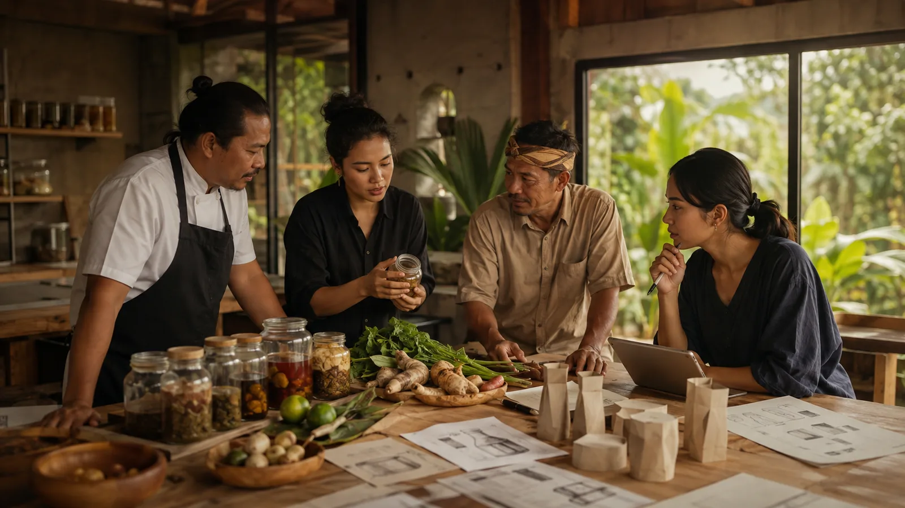
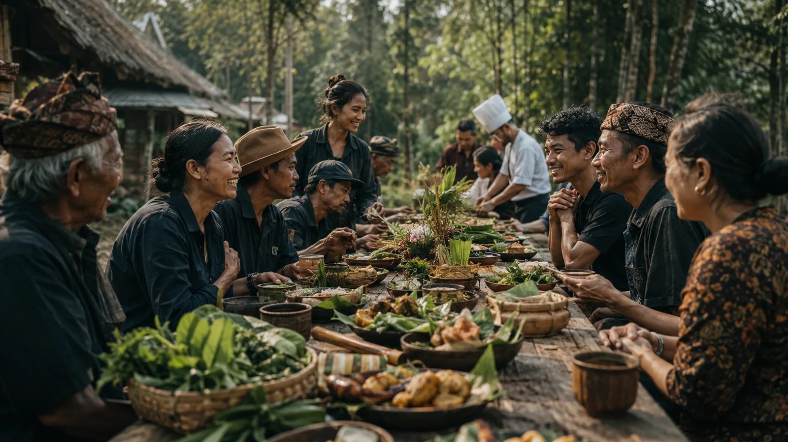

KUDAKU · Kuningan Dapur Kuliner
Where Indonesia meets through food.
KUDAKU is a cultural food platform initiated by Bumi Seni Tarikolot — a doorway into culture, people, nature, knowledge, and the future, opened one dish at a time.
KUDAKU adalah tempat Indonesia bertemu melalui pangan.
Food is how a culture explains itself.
Inside every dish is a geography, a history, a set of hands, and a way of seeing the world. KUDAKU treats food as a doorway — into the people who grow it, the land that sustains it, the knowledge that shaped it, and the future it points toward.
Five ways to enter.

A kitchen is a country in miniature.
The Indonesian word dapur — kitchen — names the hearth where raw becomes nourishing, where knowledge passes from one generation to the next, and where a family, a village, a nation is made.
KUDAKU carries this metaphor forward. We understand the dapur as the heart of culture: a place of transformation, care, gathering, and memory — the room where Indonesia has always met itself.
KUDAKU Nusantara
The annual gathering where the whole ecosystem comes to the table — three days, from root to future.
Day 1 — AKAR · Day 2 — PERTEMUAN · Day 3 — MASA DEPAN
The event lasts a few days. The platform works all year.
"Event berlangsung beberapa hari, tetapi platform KUDAKU bekerja sepanjang tahun." KUDAKU Nusantara is the annual peak of a cycle that runs all year round.
One platform. Eleven ways in.
From table to farm, kitchen to archive, the KUDAKU ecosystem connects the people who grow, cook, study, perform, and remember food.
KUDAKU Table · KUDAKU Kitchen · KUDAKU Market · KUDAKU Farm · KUDAKU Lab · KUDAKU Class · KUDAKU Talk · KUDAKU Stage · KUDAKU Archive · KUDAKU Residency · Food Diplomacy
A meal, then a memory, then a legacy.
KUDAKU measures itself by what it leaves behind — in culture, education, local economy, ecology, and the archive of knowledge it keeps.

Build the table together.
KUDAKU grows through a network of government, academia, business, community, media, and cultural institutions. If your work shares this table, begin the conversation.